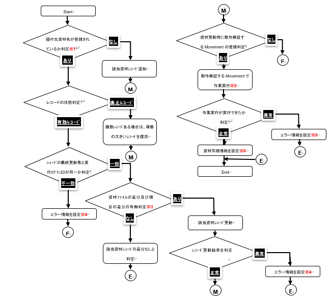

CI/CD For IaC機能¶
用語の定義¶
用語名 |
内容 |
|---|---|
ITA |
「Exastro IT Automation」の略語です。 |
紐付元資材 |
CI/CD ForIaC機能で連携するGitリポジトリ内の資材を表します。 |
紐付先資材 |
ITAの連携ドライバ「Ansible-Driver」と「Terraform-Driver」と「Terraform-CLI-Driver」の下記メニューからアップロードする資材を表します。
|
はじめに¶
CI/CD For IaC機能の概要¶
機能概要¶
- Git連携機能ITA内にGitリポジトリのクローンを作成します。クローンを介して定期的に紐付元資材の更新を検知しITAの「リモートリポジトリ資材」メニューに一覧を作成します。
- 資材紐付機能紐付元資材と紐付先資材の紐付を登録し、紐付先資材の動作検証を行う為のオペレーションとMovementを登録します。紐付元資材が更新されると、紐付先資材が自動更新され、動作検証を行う為のオペレーションとMovementで作業実行を行います。
機能概要図¶
{kind=link}
CI/CD For IaC機能 メニュー構成¶
メニュー/画面一覧¶
No |
メニューグループ |
メニュー・画面 |
段落 |
概要 |
|---|---|---|---|---|
1 |
CI/CD For IaC |
インターフェース情報 |
4.2.1 |
ITAのRestAPIで紐付先資材にアクセスする為のインタフェース情報を管理 |
2 |
リモートリポジトリ |
4.1.1 |
Gitリポジトリの情報を管理 |
|
3 |
登録アカウント |
4.1.2 |
ITAのRestAPIで紐付先資材にアクセスする為のアカウント情報を管理 |
|
4 |
リモートリポジトリ資材 |
4.2.2 |
Gitリポジトリの資材情報を管理 |
|
5 |
資材紐付 |
4.1.3 |
紐付元資材と紐付先資材との紐付情報を管理 |
CI/CD For IaC機能 利用手順¶
作業フロー¶
{kind=link}
作業フロー詳細と参照先
- インターフェース情報の登録ITAのRestAPIから紐付先資材にアクセスする為のインターフェース情報を登録します。デフォルトは、インストール先のITAにアクセスする為のインターフェース情報が登録されています。紐付先資材をインストール先のITA以外にしたい場合に、インターフェース情報を変更して下さい。詳細は「4.2.1 インタフェース情報」メニューを参照してください。
- リモートリポジトリの登録連携するGitリポジトリの情報を登録します。詳細は「4.1.1 リモートリポジトリの登録」メニューを参照してください。
- 登録アカウントの登録ITAのRestAPIから紐付先資材にアクセスする為のアカウント情報を登録します。詳細は「34.1.2 登録アカウント」メニューを参照してください。
- 資材紐付の登録紐付元資材と紐付先資材の紐付を登録します。詳細は「34.1.3 資材紐付」メニューを参照してください。
- 資材紐付にオペレーション+Movementの情報を登録更新された紐付先資材の動作検証を行う場合に、オペレーションとMovementを登録します。詳細は「34.1.3 資材紐付」メニューを参照してください。
- 自動での資材更新と動作検証の確認紐付元資材が更新される度に、紐付先資材が自動更新されることを確認します。また、オペレーションとMovementを登録している場合に、作業実行が自動で行われることを確認します。詳細は「34.1.3 資材紐付」メニューを参照してください。
CI/CD For IaC機能メニュー操作説明¶
CI/CD For IaC 標準メニュー¶
4.1.1. リモートリポジトリ
- 「リモートリポジトリ」メニューでは、連携するGItリポジトリの情報を登録します。
図 4.1‑1メニュー画面（リモートリポジトリ）
- リモートリポジトリ画面の入力項目は以下の通りです。
表 4.1-1 リモートリポジトリ画面 入力項目一覧（リモートリポジトリ）¶ 項目
説明
入力必須
入力形式
制約事項
リモートリポジトリ名
CI/CD For IaC 機能の各メニューでリモートリポジトリを示す名称を示す名称を入力してください。
〇
手動入力
最大長256バイト
リモートリポジトリ (URL)
git clone コマンドに指定する Gitリポジトリの URL を入力してください。
〇
手動入力
最大長256バイト
ブランチ
git cloneコマンドに指定する Gitリポジトリのブランチ名を入力して下さい。
未入力時は default ブランチが指定されます。
ー
手動入力
最大長256バイト
プロトコル
Gitリポジトリと接続するプロトコルを選択して下さい。
● https
リモートのGitリポジトリとhttpsで接続する場合に選択してください。
● sshパスワード認証
リモートのGitリポジトリとsshのパスワード認証で接続する場合に選択して下さい。
● ssh鍵認証(パスフレーズなし)
リモートのGitリポジトリとsshの鍵認証で接続する場合に選択して下さい。
● ssh鍵認証(パスフレーズあり)
リモートのGitリポジトリとsshのパスフレーズ付鍵認証で接続する場合に選択して下さい。
● Local
ローカルの Git の場合に選択して下さい。
〇
リスト選択
Visibilityタイプ
GitリポジトリのVisibilityタイプ(Public/Private)を選択して下さい。 プロトコルでhttpsを選択した場合、 Visibilityタイプの選択は必須入力です。
ー
リスト選択
Gitアカウント
ユーザ
Git cloneコマンド実行時に求められるユーザを入力して下さい。 VisibilityタイプでPrivateを選択した場合、ユーザの入力は必須です。
ー
手動入力
最大長128バイト
パスワード
Gitのcloneコマンドを実行した際に求められるパスワードを入力してください。
Visibility タイプでPrivateを選択した場合、パスワードの入力は必須です。
尚、GitHubでは2021年8月13 日でパスワード認証が廃止されます。
パスワード認証が廃止されている GitHub を利用している場合、Git アカウント情報のパスワードには、自身で個人アクセストークンを作成し入力して下さい。
ー
手動入力
最大長128バイト
ssh接続情報
パスワード
Git cloneコマンド実行時に求められる Linux ユーザのパスワードを入力して下さい。
プロトコルでsshパスワード認証を選択した場合、パスワードの入力は必須です。
ー
手動入力
最大長128バイト
パスフレーズ
Git cloneコマンド実行時に求められる鍵ファイルに設定されているパスフレーズを入力して下さい。
プロトコルでssh鍵認証を選択した場合、パスフレーズの入力は必須です。
ー
手動入力
最大長128バイト
接続パラメータ
Gitのcloneコマンドを実行時に環境変数「GIT_SSH_COMMANDに設定するパラメータを入力します。
GIT＿SSH＿COMMANDは、Git2.3以降のバージョンで設定できる環境変数です。 ITAサーバにインストールされていているGitバージョンがGit2.3より古い場合は、設定されたパラメータは無効になります。
環境変数「GIT_SSH_COMMAND」はデフォルトで下記のパラメータを設定しています。 設定されたパラメータはこの後ろに追加されます。
UserKnownHostsFile=/dev/null -o StrictHostKeyChecking=no
また、git config-globalにcore.sshCommandの設定が無い場合、下記のパラメータを設定します。
ssh –o UserKnownHostsFile=/dev/null -o StrictHostKeyChecking=no
git config –globalにcore.sshCommand を設定している場合、下記のパラメータを含めて下さい。
-o UserKnownHostsFile=/dev/null-o StrictHostKeyChecking=no
ー
手動入力
最大長512バイト
Proxy
Address
プロキシサーバのアドレスを入力します。
ITA がプロキシ環境下にある場合、Gitサーバまでの疎通のために設定が必要な場合があります。
プロキシサーバの URL がhttp://pro cy.gate.co.jp:8080 の場合
Address には http://procy.gate.co.jp を入力します。
Port には 8080 を入力します。
ー
手動入力
最大長128バイト
port
プロキシサーバのポートを入力します。
ITAがプロキシ環境下にある場合、 Git サーバまでの疎通のために設定が必要な場合があります。
ー
手動入力
リモート同期情報
自動同期
Gitリポジトリとの同期を自動で行うかを選択して下さい。
有効：入力された周期で Gitリポジトリとの同期を行います。
無効:Gitリポジトリとの同期は自動で行いません。
〇
リスト選択
初期値：有効
周期(秒)
Git リポジトリとの同期を自動で行う周期を入力して下さい。
未入力時のデフォルトは60秒です。
ー
手動入力
単位：秒
通信リトライ情報
回数
Gitとの通信に失敗した場合、通信をリトライする回数を入力して下さい。 未入力時のデフォルトは 3 回です。
ー
手動入力
周期(ms)
Gitとの通信に失敗した場合、通信をリトライする間隔を入力して下さい。 未入力時のデフォルトは1000msです。
ー
手動入力
単位：ms
備考
自由記述欄です。
ー
手動入力
最大長4000ﾊﾞｲﾄ
- Gitリポジトリとの同期状態を表示する項目は以下の通りです。
表 4.1-2 Gitリポジトリ同期状態表示項目一覧（リモートリポジトリ)¶ 項目
説明
備考
状態
Gitリポジトリとの同期状態を下記4つの状態で表示します。空白： レコードの新規登録・更新・廃止からの復活を行った状態正常： Git リポジトリとの同期が正常に行われている状態異常： Git リポジトリとの同期で異常が発生した状態再開： 再開ボタンをクリックした状態状態が異常になると、Git リポジトリとの同期が停止します。再開するには、再開ボタンをクリックするか、該当レコードを更新して下さい。「6.1 資材をGit リポジトリに登録する場合の注意事項」を参照して下さい。詳細情報
状態が異常になった場合、異常となった原因が表示されます。再開ボタンをクリックするか、該当レコードを更新すると詳細情報はクリアされます。最終日時
最後に Git リポジトリと同期を行った日時が表示されます。再開ボタンをクリックするか、該当レコードを更新すると最終日時はクリアされます。再開ボタン
状態が異常の場合にボタンが活性化します。再開ボタンをクリックすると状態が再開になります。 - ssh鍵認証の場合の鍵ファイルについてrootユーザで鍵ファイルを作成し鍵交換して下さい。秘密鍵ファイル(id_ras)のパスはデフォルト(/root/.ssh/id_ras)を使用して下さい。デフォルト以外にしたい場合、ssh接続情報/接続パラメータに秘密鍵ファイル(id_ras)のパスを設定して下さい。-i 秘密鍵ファイル(id_ras)のパス
- ITAサーバにリモートリポジトリを作成する場合のGitバージョンに関する注意事項Gitバージョンが1.8.4.3より古い場合、リモートリポジトリに新規ブランチを作成してからコミットするまでの間、リモートリポジトリのHEADブランチ(Defaultbranch)の特定が出来なくなる為、この間にブランチ切り替えを行った場合にブランチ切り替えの検出できません。この事により切り替え先ブランチの資材が「資材紐付」メニューの資材パスに表示されない事があります。ITAサーバにリモートリポジトリを作成する場合のGitバージョンは1.8.4.3以上を使用して下さい。
登録アカウント¶
- 「登録アカウント」メニューでは、ITAのRestAPIから紐付先資材にアクセスする為のアカウント情報を登録します。登録アカウントに登録するアカウント情報は「管理コンソール/ユーザ管理」メニューに登録しておく必要があります。
図 4.1-2メニュー画面（登録アカウント）
- 登録アカウント画面の入力項目は以下の通りです。
項目 |
説明 |
入力必須 |
入力景色 |
制約事項 |
|---|---|---|---|---|
ログインID |
「管理コンソール/ユーザ管理」メニューに登録されている、ユーザのログイン ID の一覧が表示されます。
RestAPIで使用するユーザのログイン ID を選択します。
|
〇 |
リスト選択 |
|
ログインPW |
ログイン ID で選択したユーザのパスワードを入力します。
「管理コンソール/ユーザ管理」メニューで登録したパスワードを入力します。
|
〇 |
手動入力 |
最大長128バイト |
備考 |
自由記述欄です。 |
ー |
手動入力 |
最大長4000バイト |
資材紐付¶
- 「資材紐付」メニューでは、紐付元資材と紐付先資材を紐付し、紐付先資材の動作検証を行う為のオペレーションとMovementを登録します。紐付元資材が更新されると、バックヤード機能で紐付先資材を自動更新し、動作検証を行う為のオペレーションとMovementで作業実行を行い、処理結果が表示されます。
図 4.1-3 メニュー画面（資材紐付）
- 資材紐付画面の入力項目は以下の通りです。
表 4.1-4 資材紐付画面入力 項目一覧（資材紐付）¶ 項目
説明
入力必須
入力形式
制約事項
紐付先資材名
紐付先資材に登録されている資材名を入力してください。 この名前は、紐付先資材タイプにより、下記メニューの項目に紐付けます。 各メニューの項目と同等の入力規則があります。各項目の入力規則に従い、資材名を入力してください。
メニュー名
項目名
Ansible-Legacy/Playbook 素材集
Paybook 素材名
Ansible-Pioneer/対話ファイル素材集
対象項目なし
Ansible-LegacyRole/ロールパッケージ管理
ロールパッケージ名
Ansible 共通/ファイル管理
ファイル埋込変数名
Ansible 共通/テンプレート管理
ﾃﾝﾌﾟﾚｰﾄ埋込変数名
Terraform/Module素材集
Module 素材名
Terraform/Policy 管理
Policy 名
Terraform-CLI/Module素材集
Module 素材名
紐付先資材名に入力した資材名の登録有無等の条件により紐付処理が異なります。 詳細は「(4)紐付先資材の更新処理の流れ」を参照してください。
また、紐付先資材名を変更する場合、「(5)紐付先資材名を変更する場合の注意事項」を参照して下さい。
〇
手動入力
最大長256バイト
Gitリポジトリ(Fro m)
リモートリポジトリ
「4.1.1 リモートリポジトリ」メニューに登録されているリモートリポジトリが一覧で表示されます。
紐付元となる資材が含まれいているリモートリポジトリを選択してください。
〇
リスト選択
資材パス
紐付元資材が一覧で表示されます。紐付元資材となる資材パスを選択してください。
紐付先資材タイプが「Ansible-LegacyRole/ロールパッケージ管理」メニューの場合、「6.2 ロールパッケージ管理に紐付する資材をGitリポジトリに登録する場合の注意事項」を参照してください。
〇
リスト選択
Exastro IT autmation (To)
紐付先資材タイプ
紐付先資材タイプ（メニュー）を選択して下さい。 紐付先資材は下記のメニューから選択できます。 各メニューを選択するには、各メニューに対応したドライバがインストールされている必要があります。
メニュー名
インストールが必
Ansible-Legacy/Playbook素材集
Ansible-Driver
Ansible-Pioneer/対話ファイル素材集
Ansible-LegacyRole/ロールパッケージ管理
Ansible 共通/ファイル管理
Ansible 共通/テンプレート管理
Terraform/Module 素材集
Terraform-Driver
Terraform/Policy 管理
Terraform-CLI/Module素材集
Terraform-CLI-Driver
〇
リスト選択
テンプレート管理
変数管理
紐付先資材タイプで「Ansible 共通/テンプレート管理」メニューを選択した場合、資材に必要な変数定義を入力して下さい。 「Ansible 共通/テンプレート管理」メニュー以外を選択している場合は入力不要です。
ー
手動入力
最大長8192バイト
Ansible-Pioneer
対話種別
「Ansible-Pioneer/対話種別」メニューに登録されている対話種別が一覧に表示されます。 紐付先資材タイプで「Ansible-Pioneer/対話ファイル素材集」メニューを選択した場合、紐付先資材の対話種別を一覧より選択して下さい。 紐付先資材タイプで「Ansible-Pioneer/対話ファイル素材集」メニュー以外を選択している場合は選択不要です。
ー
リスト選択
OS種別
「Ansible-Pioneer/OS 種別」メニューに登録されているOS種別が一覧に表示されます。 紐付先資材タイプで「Ansible-Pioneer/対話ファイル素材集」メニューを選択した場合、紐付先資材のOS種別を一覧より選択して下さい。 紐付先資材タイプで「Ansible-Pioneer/対話ファイル素材集」メニュー以外を選択している場合は選択不要です。
ー
リスト選択
実行ログID
「4.1.2 登録アカウント」メニューに登録されているユーザのログイン ID の一覧が表示されます。RestAPIから紐付先資材にアクセス。又は作業実行する為のログインIDを選択して下さい。
「紐付先資材タイプ」で指定したメニューに対して、「管理コンソール/ロール・メニュー紐付管理」メニューの「紐付」が「メンテナンス可」のロールに所属しているユーザのログインIDを選択する必要があります。
〇
リスト選択
アクセス許可ロール
紐付先資材のレコードを追加・更新した場合、アクセス許可ロールの設定内容を選択します。
なし：空白（アクセス許可ロールなし）
あり：「実行ログイン ID」に対して「管理コンソール/ロール・ユーザ紐付管理」メニューで紐付けているロールの内、「デフォルトアクセス権」が設定されているロールをアクセス許可ロールに設定します。 「デフォルトアクセス権」が設定されているロールが無い場合、アクセス許可ロールは空白が設定されます。
未選択時のデフォルトは「なし」です。
ー
リスト選択
素材同期情報
自動同期
Git リポジトリの資材が更新された場合に紐付先資材の更新を自動で行うかを選択して下さい。
有効：Git リポジトリの資材が更新された場合、紐付先資材の更新を自動で行います。
無効：Git リポジトリの資材が更新されても紐付先資材の更新を行いません。
〇
リスト選択
初期値：有効
デリバリ情報
オペレーション
「基本コンソール/投入オペレーション一覧」メニューに登録されているオペレーションの一覧が表示されます。
紐付先資材を更新した場合に、Movemnet を実行するオペレーションを選択します。
ー
リスト選択
Movement
「基本コンソール/Movement 一覧」メニューに登録されているMovement の一覧が表示されます。
紐付先資材を更新した場合に、実行する Movementを選択します。
ー
リスト選択
ドライラン
Movement を実行するモードを選択します。
●:を選択した場合、ドライランモードでMovementを実行します。
未選択時はドライランモードでは実行しません。
ー
リスト選択
備考
自由記述欄です。
ー
手動入力
最大長4000バイト
- Gitリポジトリの資材と紐付先資材との同期の状態を表示する項目は以下の通りです。
表 4.1-5 資材紐付状態表示項目一覧 (資材紐付)¶ 項目
説明
備考
資材同期情報
状態
紐付元資材と紐付先資材の同期状態を下記4つの状態で表示します。
空白： レコードの新規登録・更新・廃止からの復活を行った状態。
正常： 紐付元資材と紐付先資材の同期が正常に行われている状態
異常： 以下の2通りの状態が考えられます。
・紐付元資材と紐付先資材の同期で異常が発生した状態
・紐付先資材の更新により、設定されているオペレーションとMovementで作業実行をしたが作業実行が出来なかった状態※1
再開： 再開ボタンをクリックした状態
状態が異常になると、紐付元資材と紐付先資材の同期が停止します。再開するには、再開ボタンをクリックするか、該当レコードを更新して下さい。
詳細情報
紐付元資材と紐付先資材の同期状態が異常になった場合、異常となった原因が表示されます。
再開ボタンをクリックするか、該当レコードを更新すると詳細情報はクリアされます。
最終日時
最後に紐付元資材と紐付先資材の同期を行った日時が表示されます。
再開ボタンをクリックするか、該当レコードを更新すると最終日時はクリアされます。
最終実行ログインID
最後に紐付元資材と紐付先資材の同期を行ったログインID が表示されます。
再開ボタンをクリックするか、該当レコードを更新すると最終実行ログインIDはクリアされます。
再開ボタン
状態が異常の場合にボタンが活性します。
再開ボタンをクリックすると状態が再開になります。
デリバリ情報
詳細情報
紐付先資材の更新により、設定されているオペレーションと Movement で作業実行をしたが作業実行が出来なかった場合、実行出来なかったエラー原因が表示されます。※1
尚、作業実行が実行できた場合、実行結果が異常かどうかの判定※2 はしていません。 作業状態確認ボタンをクリックし「各ドライバ/作業状態確認」メニューより実行結果を確認して下さい。
再開ボタンをクリックするか、該当レコードを更新すると詳細情報はクリアされます。
作業インスンスNo
オペレーションと Movement で作業実行が実行できた場合、作業実行の作業インスタンス No が表示されます。
再開ボタンをクリックするか、該当レコードを更新すると作業インスタンス No はクリアされます。
作業状態確認ボタン
オペレーションと Movement で作業実行が実行できた場合、作業状態確認ボタンが活性します。
作業状態確認ボタンをクリックすると、「各ドライバ/作業状態確認」メニューが表示され、作業実行の状態を確認する事が出来ます。
「作業状態確認」の詳細については各ドライバの「利用手順マニュアル」を参照してください。
再開ボタンをクリックするか、該当レコードを更新すると作業状態確認ボタンは非活性になります。
- 紐付先資材の更新処理の流れ
{kind=link}
- 紐付先資材名を変更する場合の注意事項紐付先資材名を変更した場合、紐付先資材の変更前のレコードはそのまま残り、変更後の紐付先資材名で新しいレコードが作成されます。
CI/CD For IaC 非表示メニュー¶
インターフェース情報¶
- 「インターフェース情報」メニューには、ITAのRestAPIから紐付先資材にアクセスする為のインターフェース情報を登録します。デフォルトは、インストール先のＩＴＡにアクセスする為のインターフェース情報が登録されています。紐付先資材をインストール先のＩＴＡ以外にしたい場合に、インターフェース情報を変更して下さい。
図 4.2-1メニュー画面（インタフェース情報）
- インターフェース情報画面の入力項目は以下の通りです。
表4.2-1 インターフェース情報 画面入力項目一覧（インタフェース情報）¶ 項目
説明
入力
必須
入力形式
制約事項
ホスト名
ITAサーバのホスト名またはIPアドレスを入力します。
○
手動入力
最大長128ﾊﾞｲﾄ 初期値: 127.0.0.1
プロトコル
ITAサーバとのプロトコル(http/https)を入力します。
○
手動入力
初期値: http
ポート
ITAサーバの接続ポート(80/443)を入力します。
○
手動入力
初期値: 80
備考
自由記述欄です。
ー
手動入力
最大長4000ﾊﾞｲﾄ
リモートリポジトリ資材¶
- 「リモートリポジトリ資材」メニューには、紐付元資材の一覧が表示されます。「リモートリポジトリ資材」メニューに表示される情報はバックヤード機能で更新しています。レコード追加・更新・削除は行わないで下さい。
図 4.2-2メニュー画面（リモートリポジトリ資材）
- リモートリポジトリ資材画面の表示項目は以下の通りです。
表 4.2-2 リモートリポジトリ資材表示 項目一覧（リモートリポジトリ資材）¶ 項目
説明
入力必須
入力形式
制約事項
リモートリポジトリ名
「4.1.1リモートリポジトリ」メニューで登録したリモートリポジトリ名が表示されます。
○
リスト選択
資材パス
紐付元資材の資材パスが表示されます。
「4.1.1リモートリポジトリ」メニューの「同期状態」が「異常」が設定されているリモートリポジトリの資材パスは表示されません。
○
リスト選択
最大長4096ﾊﾞｲﾄ
運用操作¶
メンテナンス方法について¶
説明 |
対象ファイル名 |
|---|---|
CICD For IaC機能 「4.1.1リモートリポジトリ」に登録されているGitリポジトリのローカルクローンを作成する。※1 「4.1.3資材紐付」で紐付けられている紐付先資材を自動更新し、動作検証を行う為のオペレーションとMovementで作業実行を行う。 |
ky_CICD_for_IaCgit_synchronize-workflow.service |
# systemctl start ky_CICD_for_IaC_git_synchronize-workflow.service
# systemctl stop ky_CICD_for_IaC_git_synchronize-workflow.service
# systemctl restart ky_CICD_for_IaC_git_synchronize-workflow.service
ログレベルの変更¶
<インストールディレクトリ>/ita-root/confs/backyardconfs/ita_env<インストールディレクトリ>/ita-root/confs/backyardconfs/ita_env<インストールディレクトリ>/ita-root/logs/backyardlogs付録¶
資材をGitリポジトリに登録する場合の注意事項¶
- 255ﾊﾞｲﾄ以上の資材名が含まれるGitリポジトリを「4.1.1リモートリポジトリ」メニューに登録すると、Gitclone commandが異常終了します。
- ファイルパスも含めて4096ﾊﾞｲﾄ以上の資材名が含まれるGitリポジトリを「4.1.1リモートリポジトリ」メニューに登録すると、Gitclone commandが異常終了します。
ロールパッケージ管理に紐付する資材をGitリポジトリに登録する場合の注意事項¶
- rolesという名前のディレクトリを含むディレクトリを作成し、この配下にロールパッケージに必要なファイル・ディレクトリを配置して下さい。ロールパッケージとしてzipで固められる資材は、rolesディレクトリの上位ディレクトリ配下になります。ただし、Gitリポジトリのルートディレクトリ直下にrolesという名前のディレクトリを作成しても、「Ansible-LegacyRole/ロールパッケージ管理」メニューに紐付するrolesディレクトリとして認識しません。<Exp>以下のようなファイル・ディレクトリ構成の場合、「sample/roles」はrolesディレクトリとして認識しますが、「roles」はrolesディレクトリとして認識しません。GitリポジトリのルートディレクトリGitリポジトリのルートディレクトリ¶
|- roles ・・・・・・・roles ディレクトリとして認識しません。 | | ita_readme_test_role.yml | | ita_translation-table_test_role.txt | |- test_role | |- defaults | | main.yml | |- tasks | main.yml | |- sample | ita_readme_test_role.yml | ita_translation-table_test_role.txt |- roles ・・・・・・・roles ディレクトリとして認識します。 |- test_role |- defaults | main.yml |- tasks main.yml